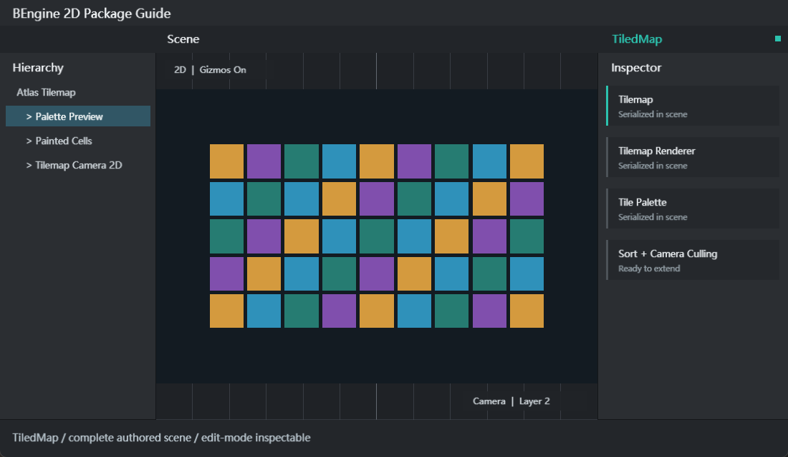

Tilemap
paletteAsset、cellSize、cellGap、tileAnchor 与稀疏 TileCell 集合。提供坐标转换、读写、区域填充、洪泛、替换与 Bounds。
TiledMap 提供稀疏整数网格、TilePalette YAML 资源、TextureAtlas 导入、 Scene 选取/Gizmos、可撤销画笔和基于相机的批量渲染。Tile ID 0 永远表示空单元。

Assets/Examples/AtlasPalette/res/AtlasPalette.scene.yaml。Play 中 SetTile/BoxFill 只修改运行时场景镜像，停止后会丢弃。 要持久化地图，请在编辑模式使用 Tile Palette 窗口并保存 scene.yaml。
| 示例 | 直接序列化内容 | 学习点 |
|---|---|---|
| Atlas Palette | 八个 TileCell、四项 Palette、旋转/翻转 Flags、TilemapRenderer、Camera2D | 2x2 Atlas 切片、TextureAtlas 导入、Tile ID 与 UV、排序与合批。 |
| Runtime Painting | Tilemap、Renderer、Palette 引用、RuntimePainter、Camera2D | BoxFill、SetTile、边框房间、运行时 TransformFlags 与资源隔离。 |
两个 bpackage 都包含可直接打开的场景、Palette、脚本、asmdef 和详细 Readme。TiledMap 示例 从一开始就包含真实 Tilemap 组件和 Camera，不以空 Bootstrap 代替场景。
paletteAsset、cellSize、cellGap、tileAnchor 与稀疏 TileCell 集合。提供坐标转换、读写、区域填充、洪泛、替换与 Bounds。
继承 Renderer2D；配置 sortingLayer、 orderInLayer、opacity、material、color、sortOrder 和 cullOutsideCamera。
Name、Atlas、Columns、Rows、Tiles。 SliceAtlas 规则切片；ImportAtlas 从 TextureAtlas 的 Sprite 名称和 UV 生成定义。
Definition 保存正 ID、Name、Texture、 归一化 UV、RGBA Tint 和 HasCollider；Cell 保存坐标、Tile ID、Tint 与 Transform Flags。
| Transform Flag | 用途 |
|---|---|
| FlipX / FlipY | 不增加图集 Sprite 的水平/垂直镜像。 |
| Rotate90 / Rotate180 | 按 2D 单元中心旋转；可与 Flip 组合。 |
| None | 按 Palette UV 原样绘制。 |
| API | 说明 |
|---|---|
| GetTile / GetCell / HasTile | 读取 ID、完整 Cell 或判断坐标是否占用。 |
| SetTile / ClearTile / ClearAllTiles | 写入或删除稀疏单元。 |
| BoxFill / FloodFill / SwapTile | 批量区域、连通区域和 ID 替换。 |
| GetBounds / GetTiles(sortOrder) | 读取紧致边界或按渲染顺序枚举。 |
| CellToLocal / CellToWorld / WorldToCell | 在整数网格和 Transform 空间间转换。 |
| SetPaletteOverride / TryGetPalette / RefreshAllTiles | 运行时 Palette、解析资源与刷新 Revision。 |
using BEngine.TiledMap;
public void BuildRoom(Tilemap map)
{
map.ClearAllTiles();
map.BoxFill(new TileCoordinate(-6, -4), new TileCoordinate(6, 4), 1);
map.BoxFill(new TileCoordinate(-5, -3), new TileCoordinate(5, 3), 0);
map.SetTile(new TileCoordinate(0, 0), 2,
TileTransformFlags.Rotate90 | TileTransformFlags.FlipX);
}Tile 单元与 Sprite、Particle、UI 一样进入统一 2D 排序：Sorting Layer → Order In Layer → Hierarchy → 透明度/稳定顺序。TilemapRenderer 的 sortOrder 决定同一 Tilemap 内单元遍历方向。 Camera2D cullingMask 必须包含 Renderer 的世界层；cullOutsideCamera 会在提交前剔除视口外单元。
能否合批由 Material + Shader + Atlas/Texture 决定。相邻 Tile 使用同一 Renderer Material 和同一 Palette Atlas 时可共享 Batch；不同材质、Shader 或 Texture 会断开。透明度和排序约束 仍优先于合批，不能为减少 Draw Call 改变正确的视觉顺序。
把窗口/菜单放入 Editor asmdef。编辑前调用 Undo.RecordObject， 修改后 EditorUtility.SetDirty(tilemap) 与 SceneView.RepaintAll。Asset 创建命令使用 AssetDatabase.GenerateUniqueAssetPath，顶部 Assets 菜单与 Project 右键会自动共享外部 MenuItem。
| 只显示检查纹理 | Palette.Atlas 未设置或路径错误；指定 PNG/TextureAtlas 并保存 Palette。 |
|---|---|
| 画笔没有目标 | 在 Hierarchy 选择带 Tilemap 的 GameObject。 |
| Tile 不显示 | 确认 ID 大于 0、Palette 中存在定义、Camera mask 包含 sortingLayer、opacity 非 0。 |
| 合批被拆开 | 比较 Material、Shader、Atlas/Texture 和排序连续性。 |
| Play 后地图恢复 | 运行时隔离的预期行为；在编辑模式绘制并保存场景。 |